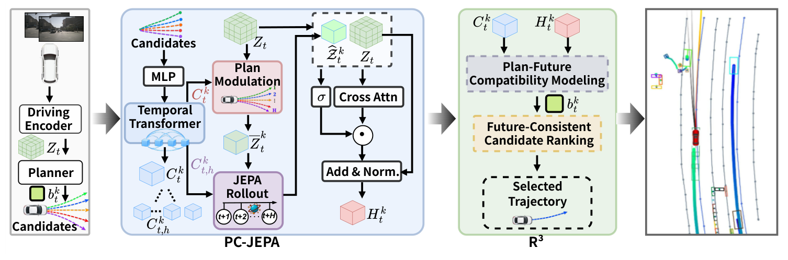
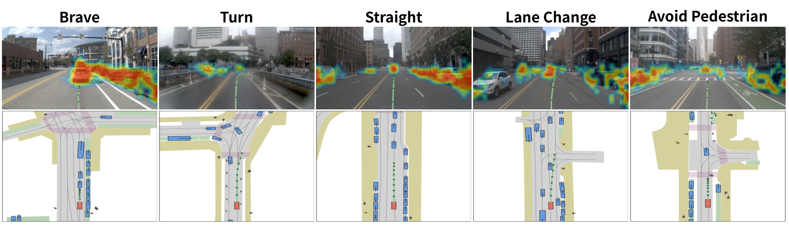
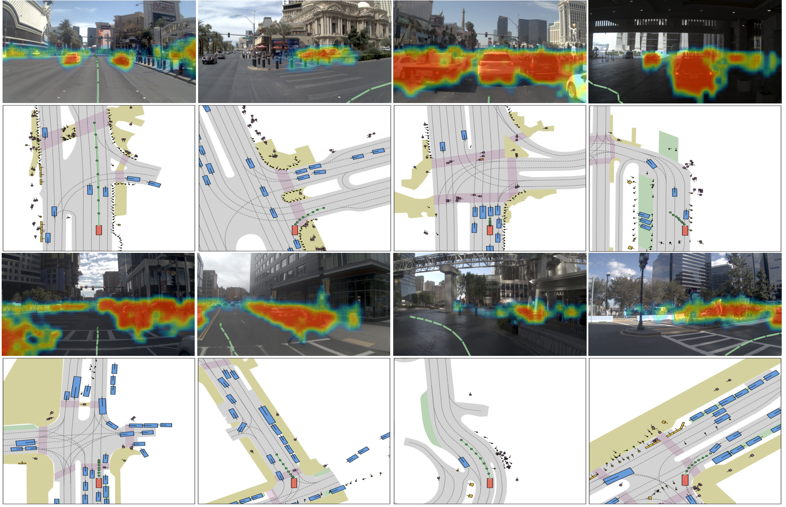
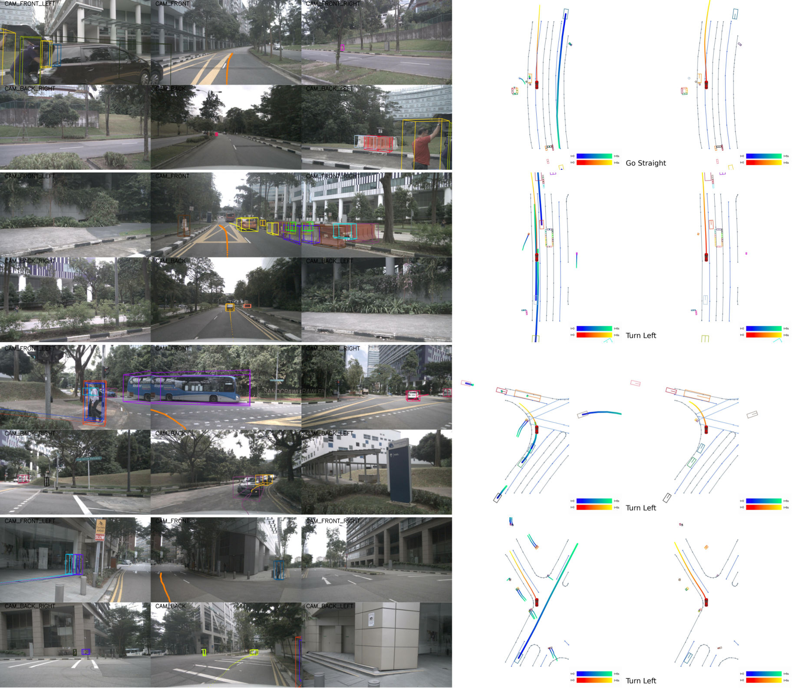

Plan-conditioned JEPA
Candidate actions condition latent dynamics, connecting future prediction to the decisions the planner needs to make.
ACTION-CONDITIONED WORLD MODELING · LATENT PLANNING
1Nanyang Technological University 2Beijing Jiaotong University
3Dalian University of Technology 4Beijing Institute of Technology
5The University of Queensland 6Virginia Tech
† Equal contribution * Corresponding author

THE IDEA
ActWorld-JEPA connects a perception-based driving planner with action-conditioned latent future prediction. Candidate trajectories guide the JEPA rollout; current and predicted-future representations inform plan compatibility and trajectory selection.
Candidate actions condition latent dynamics, connecting future prediction to the decisions the planner needs to make.
Plan–future compatibility and candidate relationships refine the base planner’s decisions.
Released configurations preserve each benchmark’s actual selection or trajectory-refinement pipeline and evaluation protocol.
MAIN EXPERIMENTS
| Benchmark | Metric | Result | Protocol |
|---|---|---|---|
| NAVSIM v1 NAVTEST · R383 | PDMS ↑ | 90.07 | Leaderboard result reported by the authors |
| NAVSIM v2 NAVTEST | EPDMS ↑ | 91.6 | Human-filter aggregation fix |
| NAVSIM v2 NAVHARD | Combined EPDMS ↑ | 42.7 | Human-filter aggregation fix; same predictions as legacy 39.2 |
| nuScenes · 6 s | L2 (m) ↓ | 2.3945 | Round 13, repeat 04 |
NAVSIM v2 corrected scores are not directly comparable to results computed with the legacy aggregation bug. NAVHARD stage-one / stage-two scores are 80.0 / 53.5; its combined score is not their arithmetic mean. nuScenes repeat 04 is a selected repeated inference run, not a separate trained model.
| Metric | 1 s | 2 s | 3 s | 4 s | 5 s | 6 s | Mean |
|---|---|---|---|---|---|---|---|
| L2 (m) ↓ | 0.2780 | 0.5380 | 0.8851 | 1.3135 | 1.8181 | 2.3945 | 1.2045 |
| Box collision (%) ↓ | 0.012 | 0.136 | 0.344 | 0.723 | 1.334 | 2.034 | 0.7638 |
NAVSIM VIDEO DEMO
31.5 seconds · three continuous turning clips · source cadence 2 Hz. Offline replay of saved R383 predictions, not closed-loop driving. BEV actors are dataset annotations; predicted trajectories are unmodified. Camera privacy masking applied.
Data: nuPlan/Motional and OpenScene. Derived media: CC BY-NC-SA 4.0 and nuPlan non-commercial dataset terms. Provenance, license and rendering instructions ↗
QUALITATIVE RESULTS
Visualizations supplied with the paper draft. These illustrate behavior; they are not substitutes for quantitative evaluation.



ACKNOWLEDGEMENTS
We thank the authors of Drive-JEPA, NAVSIM, MomAD, SparseDrive and V-JEPA 2. Upstream code and artifacts retain their respective licenses.